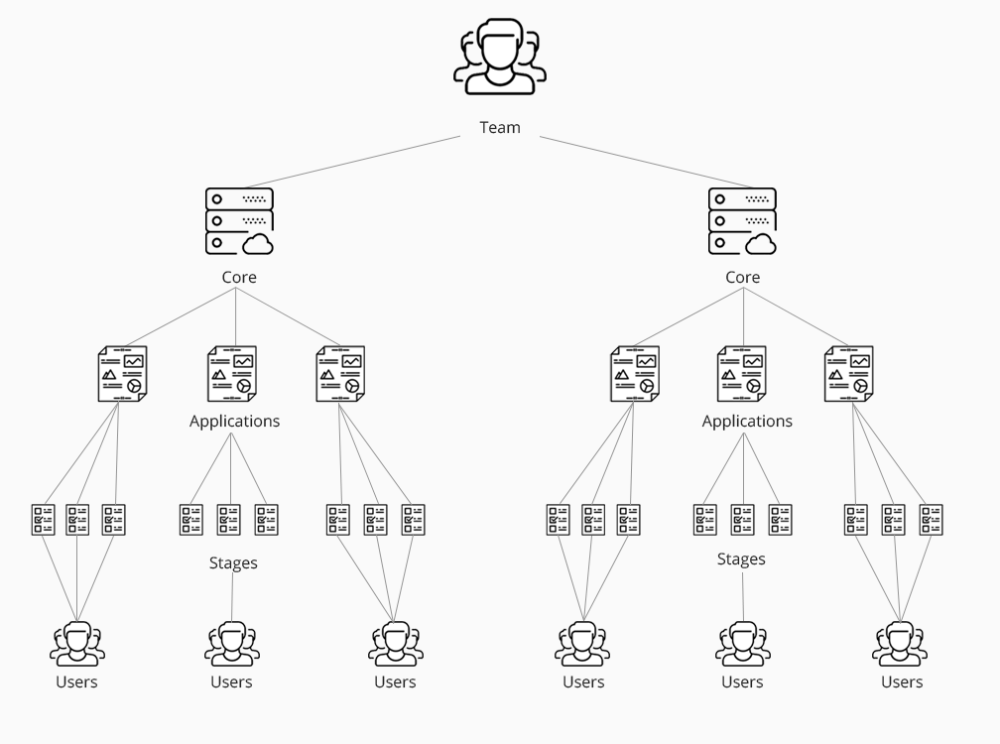
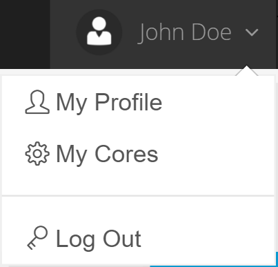
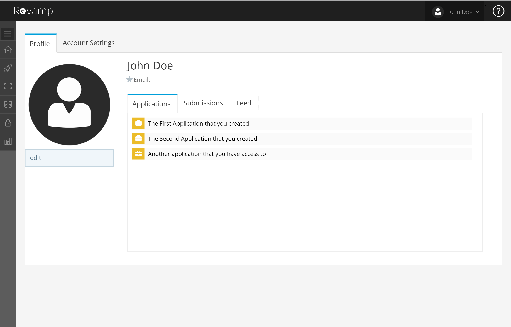
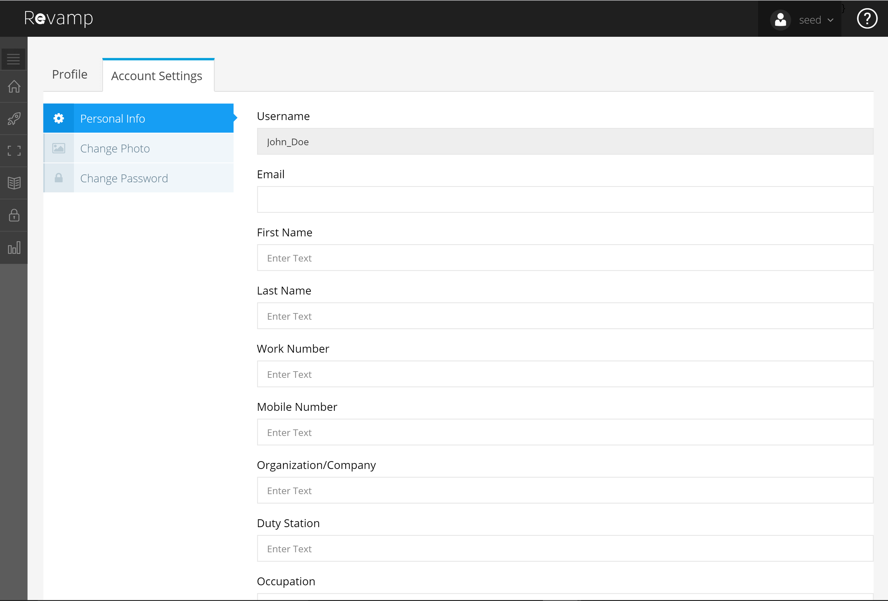
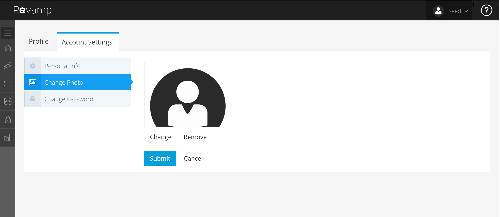
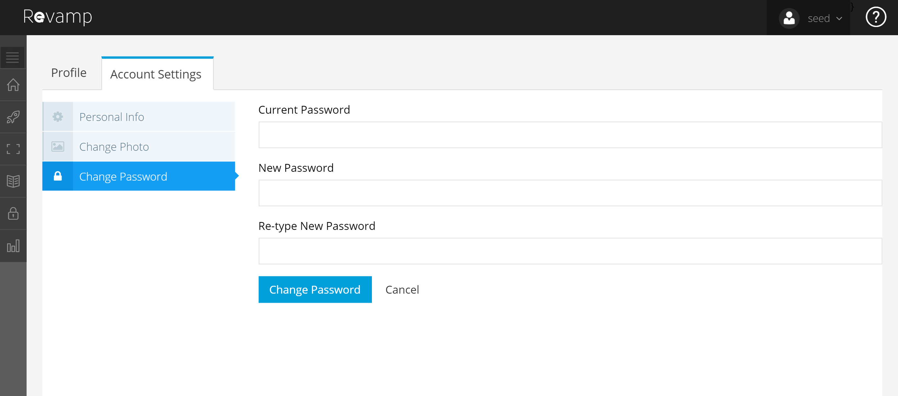

Revamp Guide
Tips for both those just starting off and experts.

Why Revamp?
Welcome! If you want to learn more about using Revamp, you’ve come to the right place. Revamp is the easiest way for you and your team to collect, analyze and share data, and this Guide can help you get started. Our easy-to-read guide will help your team do more, together, from day one.

Before you become a Revamp master, here are 3 key concepts to help you on your journey:
-
MAKE IT EASY FOR YOUR USERS
Imagine if collecting data from your customers was fun, simple, and easy. This is what Revamp is all about! Once your team has Created a Core, you can design multi-stage web forms for your team to work with customers. -
GUIDE USERS THROUGH YOUR PROCESSES STEP BY STEP
Revamp helps you break down your processes. By using simple designs and helpful context you will help your users learn quickly. This will help them provide you with accurate data when you need it most. -
IT’S EASY, SECURE AND GETS MORE POWERFUL AS YOU USE IT
It’s simple to get started and design in Revamp. If you know PowerPoint, you can start creating in Revamp. As you add more users and processes, it will keep your data safe and scale with your needs.
Now let's get you educated!
Check out the sections below to learn how to use Revamp with your team. If you just want help using a particular feature, you can jump to that section by clicking on it in the sidebar on the right. Here in the Basics section, you’ll learn how to create new Cores for your team, and get suggestions for managing your Cores and your team. We suggest starting with the following sections first, but if you’re ready to skip ahead go for it.
Basics
How Revamp Works
After you sign up for Revamp, you’ll be able to create a Core. A Core is a collection of applications and data. Before you dive in, let’s go through the basics. 
In Revamp, we call users Identities. Identities are people on your team or they can be users that you need to work with.
Cores are at the top of the stack; they can relate to your team's name, departments or other areas.
Applications are one or more Stages that work together. Creating an Application is easy once you learn how to do it. Be creative, keep it simple and put your users needs first.
Stages are the pages of your application. Stages are made of different types of objects (i.e. form fields, images, rich text, and HTML.)
Creating a Revamp Account
Revamp is a role-based system. This allows you to control what your users can and can't access. To create an account in Revamp you must either register to be a Core Owner or be invited to join a core by another Core Owner.
As a the Core Owner (SAAS)
-
Pick a plan on the sign-up page. Make sure that you read the details of each plan carefully, but don't worry if you need to upgrade you will still have the opportunity to do that later.
-
Complete the registration form and check your email. You should receive an email with your verification link.
-
Click on the Verification Link in your email. The link will launch the Revamp login page in your browser. Enter your username/password and let the fun begin.
As a the Core Owner (Private Cloud)
-
On the Revamp login page, on the bottom left under the Login form, click on the Register link.
-
Once the Register page loads, enter a username, email, password, confirm password.
-
Press the Submit button. Your account will be created and you can now access Revamp.
Logging in to Revamp
To log in to Revamp, you must register first. After you register and your account is activated and verified, only then will you be able to access Revamp.
-
On the Revamp Login page enter your username and password.
-
If you want Revamp to remember your username click the Remember Me? check box.
-
Press the Submit button. You will now be able to access Revamp.

-
To log out of Revamp, hover over your username on the right of the Top Navigation Bar, when the drop down is shown click Log Out.

Cores: are where the magic happen
Most actions in Revamp happen in Cores. You can keep your Core private, but the true power of Revamp comes from granting others access to your Core. This allows you to collect data and work with your team.
Creating Cores
Manage your Revamp profile
When you register to Revamp they are automatically given a profile. Each profile contains a person’s personal information and their photo (if one has been uploaded).
-
To view your profile, hover over your username on the right of the Top Navigation Bar, when the drop down is shown, click on the My Profile link.
-
Once your profile page loads, you will see your profile.
 -
On the profile page, you will be able to see the Revamp applications that you have access to on the Applications (Available Apps) tab. You will also see all of your submissions to those applications as well as the status of those submissions (if those application has a status field as a part of it's design) on the Submissions tab. On the Feed tab you will see all of your activity inside of Revamp.
-
On your profile you will see two tabs. The Profile tab and the Account Settings tab. The Account Settings tab allows you to edit your Personal Info, Change your profile photo, and Change your password.
 -
To edit your Personal Info, type the proper information in each field and click the Submit Button.
-
To change your photo, click on the Change Photo section on the left. The Change Photo page will be shown.
 -
Click the Select image button and select an image from your hard drive that is close to 200 x 150 px. (If you are using a browser less than IE 10 you will not see a thumbnail until after you submit.) Your profile image will be changed.
-
To change your password click on the Change Password section. The Change Password page will be shown.
 -
Type in your Current Password, New Password and Retype Your New Password for confirmation.
-
Click the Change Password button to save your changes.
Linking your SmartCard for Single Sign On
Each profile can be linked to your smart card NOTE: In order for a smart card to be linked to an identity, Revamp must be accessed through SSL (HTTPS).
- To link your smart card to your profile navigate to your profile and click on the Account Tab and click on the Link smart card section. Your smart card will now be linked to your account and you will no longer be required to login using username and password.
Viewing the security dashboard - (Private Cloud Only)
The Security Dashboard displays all of the Identities, Roles, Groups and Revamp Login Activity and System Activity.
-
To access the Security Dashboard click on the Security tab in the Sidebar, then click on the Security Dashboard link, the Security Dashboard page will be shown.
Roles and Privileges
Roles are used to give privileges to identities in Revamp. Privileges determine what an identity can access and what actions they can perform. All roles and privileges can be viewed by navigating to the Security tab in the Sidebar.
By default, Revamp comes with the following Roles:
-
AUDITOR
-
CREATOR
-
OBJECT OWNER
-
OWNERS (Administrator Level Role)
-
PUBLIC ACCESS
-
SYSTEM ADMIN (Administrator Level Role)
-
To view the privileges for a Role, go the Security tab in the Sidebar and click on Roles then click on All Roles.
-
Once the All Roles page is shown, you can view the privileges of that role by clicking on the View Privileges link next to a role. The Privileges for that Role will be displayed on the Role Privileges page.


Managing Identities
Each user account in Revamp is called an Identity. An Identity can be added through registration or on the All Identities or Core Identities page by clicking the Add Identity button. When an Identity is disabled that person will no longer be able to use their username and password to access the system.
-
To view all identities in Revamp, click on the Security tab in the Sidebar then click on the Identities Section to expand it, once it expands then click on the All Identities link.
-
To add an identity, click on the Add Identity button, the identity popup will be shown.
-
Enter the Username, Password and Confirm the Password for the new identity, then press the Save button to add the new Identity.
-
To disable an Identity click on the Disable link next to the Identity that you want to disable.


Changing Passwords
After a person has registered, their account will be enabled once they click the verify link in the email that they received in their inbox. Although people can register themselves they will not be able to reset their own passwords. This is currently an administrative function only in Revamp.
-
To reset an identities’ password navigate to the All Identities page.
-
On this page you will be able to click on the Change Password link next to the identity that you would like to change the password for.
-
The Change Password popup will be displayed, enter the new Password and then fill in the Confirm Password.
-
Next notify the person of their new password.

Managing Roles
As an administrator, Revamp allows administration.
-
To create a role in Revamp you must first navigate to the All Roles page in the Sidebar under the Security tab.
-
Once the All Roles page is displayed, click the Create Role button, the Create Role popup will be shown.
-
Add a name for your new role, press the Save button to save the new role.
-
To edit a Role click the Edit link next to the role that you want to edit, the Edit Role popup will be shown, change the role name and press the Save button.

To disable a Role click the Disable link next to the role that you want to disable.
Assigning and removing roles
In order for an Identity to have privileges to do more than login to Revamp they must be assigned a Role that has privileges. Once an identity is assigned to role, that identity will be able to perform the actions that are allowed by that role’s privileges.
-
To assign a role to an identity navigate to the All Identities page.
-
Once the page is shown, click the Roles link next to the identity that you want to edit.
-
The Identity Roles page will be shown, click on the Add Role button, the Add Role to Identity popup will be shown.
-
Select the Roles that you want to add this identity to and press the Save button.
- To remove roles from an identity, click the Remove link next to role in the list on the Identity Roles page.


Viewing Applications
All applications in Revamp are created in the browser using Revamp’s drag and drop application builder. Administrators can view individual applications or on the All Applications page. From the All Applications page you can view, edit and duplicate an application. You can also set the roles that can access an application and view the Application Dashboard & submissions.
-
To view all applications in your Revamp install click on the All Applications link in the Sidebar in the Applications section.
-
The Applications page will be shown listing all of the current applications in your Revamp install.

Creating Applications
As an admin in Revamp you can easily design and deploy applications for use by internal or external users. The drag and drop application builder makes creating applications for collecting data or sharing information easy without requiring you to do programming.
In Revamp applications there are no pages or files that are used to build your application like in HTML or programming languages. Revamp applications consist of one or more Stages. A Stage is a virtual representation of a page.
Once an application is created, it will be given a unique URL (<your revamp URL>/app/<your app name>). The applications that you create are only accessible in Revamp by registered users that have the roles that you assign to your application.
-
To create an application there are multiple ways to access the application builder. You can access the application builder on the Sidebar in the Applications section by clicking the Build Application link. You can also access the application builder from the home page by clicking the Build Application button in the all applications dashboard widget.
-
Once the application builder page loads, you can create applications in six steps:
-
Change application settings
-
Design layout with sections and stages
-
Add objects to sections
-
Edit section settings
-
Save application
-
Preview application
-
Modifying an application's settings
When creating an application the first thing that you should do is change the settings of the application. All of the settings don't need to be changed but you should at least give your application a unique name. The name of the application is what will be used to generate the unique URL for your application.
-
There are two ways to get to an application’s settings. The first method is to click on the name of the application while in the Application Builder. The second method is to click on the Settings button.
-
After you click either the Settings button or Application Name, the Settings popup will be shown.
-
NOTE: Each application setting has tooltips that you can hover over for an explanation of what each setting does.
-
Add a new name in the Application Name field in the General Settings section.
-
NOTE: If you change the application name after initial save Revamp will treat your application as a new application. When you go to the All Applications page you will see both applications listed under both the old and new application name.
-
To add a logo for your application, click the Select Image button, select an image from your hard drive. The logo will be displayed in the type right of the Top Navigation Bar when your application is accessed via it’s URL.

To choose which roles can access your application, click on the Application Access section, the Application Access section should expand and allow you to select a role/s. Once you select a role/s that role/s will be able to access your application. Click the done button.

Designing an application’s layout
When creating an application you can add sections to help you define the structure and layout of your application. When you click on the Add Section button inside the builder, a section will be added to an area inside of the stage.
You can add as many sections as you need to a Stage. Sections can also be resized by dragging the bottom right corner of a section. We highly recommended that you design your application one Stage at a time. This makes it easier to think through the flow of your application.

Adding a stage, stage settings and stage right-click menu
Stages are virtual representations of pages in traditional web development and serve as a container for Grips and Object Sets. They are dynamically generated by the Revamp framework on request, which adds an additional level of security and flexibility to applications.
By default, all applications in Revamp come with one stage titled Stage 1. To make an application more useful in more situations, an application can have multiple stages. Like applications, each Stage in Revamp has it's own settings. Also, each Stage has a right-click menu that allows you to manage the stage and the sections that are placed on.
-
To add a Stage, you must click the plus sign next to the Stage 1 tab. This will add a new stage.
-
To modify a stage's settings, click on the settings icon (looks like a cog or gear) next to the title of the stage.
-
NOTE: Each stage setting has tooltips that you can hover over for an explanation of what each setting does.
- To access the right click menu of a stage, right click in a stage, the right menu will be shown.
Adding objects to sections
Once you have sections added to your application you can add objects to those sections. In Revamp, there are form, data and other types of objects that you can add to the sections of your application.
-
To add objects to sections, select the section that you want to add the object to, hover over the Object drop down and click on the object that you want to add.
-
The Object Properties popup will be shown. The Object Properties popup contains all of the settings for an object allowing you to customize an object to fit your needs.
-
NOTE: Each object setting has tooltips that you can hover over for an explanation of what each setting does.

Available Object Types
|
Name |
Description |
Type |
|
Text Field |
Adds a HTML textbox element to a section. |
Form |
|
Text Area |
Adds a HTML textarea element to a section. |
Form |
|
Drop Down |
Adds a HTML dropdown element to a section. Drop down objects can be set to status objects. This allows you to notify the user that submitted the form when the values of this object are changed. The default value of a status object will be the first item that is in the drop downs' options. This default value will be displayed in the submission data when non-admin users submit a form. |
Form |
|
Check Box |
Adds a HTML checkbox element to a section. |
Form |
|
Radio Buttons |
Adds a HTML radio button element to a section. |
Form |
|
Button |
Adds a HTML button element to a section. This button can be of type submit, go-to-stage or cancel. Go-to-stage buttons allow users to be routed to a new stage after the form is submitted. Submit takes the user back to their profile but submits the data first. Cancel takes the user back to their profile but does not submit the data. |
Form |
|
Label |
Adds a HTML label element to a section. This allows you to add rich text to a section. |
Form |
|
Number |
Adds a HTML textbox element that only takes numbers to a section. |
Form |
|
|
Adds a HTML textbox element that only takes email addresses to a section. |
Form |
|
URL |
Adds a HTML textbox element that only takes URLs to a section. |
Form |
|
Currency |
Adds a HTML textbox element that only takes currency to a section. This object also allows you to choose the currency type from a select box. |
Form |
|
Date |
Adds a HTML textbox element to a section that only takes dates. This object allows you to select the date from a date picker. |
Form |
|
Time |
Adds a HTML textbox element to a section that only takes time as input. |
Form |
|
Phone |
Adds a HTML textbox element to a section that only takes time as input. |
Form |
|
File Upload |
Add a HTML file upload element to a section that only takes the file types that you specify in the object’s properties. |
Form |
|
Rich Text |
Adds a rich text editor element to a section. |
Other |
|
Image |
Adds an image from your computer or an existing image from the Revamp image library to a section. |
Other |
|
Total |
Adds a textbox element that allows you to select the existing number objects and perform an addition calculation on them in real time. |
Data |
Edit sections settings
Like applications and stages, sections have settings that allow you to customize each individual section. This is a crucial step to designing great looking applications in Revamp.
-
There are two methods to get to Section Settings, the first method is to double click the section. The second method is to left-click on the section to selected it and then right-click anywhere in the stage and click Section Settings.
-
The Section Settings popup will be shown and you can customize the borders, background color, font color and choose which roles this section will be visible to.

Saving an application
In Revamp, you can save an application using two methods. The first method is to press the Save button in the application builder and the second method is by activating Autosave in the application builder. To activate auto-save you must press the Autosave On button. To deactivate the autosave, click the button again.
NOTE: In order to save an application you must add at least one section on a stage and change the name of your application.
NOTE: At this point any identity with the role/s, that you gave access to, will be able to access your application.

Preview an application
Once your application has been saved, you can then preview the full application by clicking the Preview button. The application will be launched in a new tab in your current browser window.
NOTE: If you don't save your application you will only be able to preview the first stage.
Viewing an application's details
Each Application in Revamp comes with a dashboard that displays an activity graph (submissions and application activity) for an application and a table containing all of the application's entries. This page is called the Dashboard page.
-
To view the details of an application you must go to the All Applications page.
-
Click on the details icon (looks like a dashboard) in the Application that you want to view the details page for.
-
The details page will load.

Adding submissions/entries
Once an application has been created and saved, a user with the proper role and privileges can access the application from their profile via their Applications tab. Users can also access the application via the application's URL.
Once the stage has been completed and all fields have been validated the submission will be added once the button is pressed.
Admin users can add a submission/entry via the All Applications page by clicking on the eye icon or via the Application Details page by clicking the Add Entry button.

Exporting submission data
Submission data in Revamp can be exported to Microsoft Excel for further analysis and manipulation.
-
To export submission data you will have to click on the applications Dashboard page and this click the export data button.
-
Once the button is click you will be prompted to save the data as an excel spreadsheet on your local hard drive.
Change the date range for application activity graph
Each application in Revamp has an application activity graph that displays the date a submission was viewed and when submission were added.
-
Navigate to the details page of an application
-
Click on the right corner of the date picker.
-
Select a date range and click the Apply button, the date range for the displayed data should change.

Searching for specific submissions
Each application details page allows you to search for specific data items that have been submitted.
-
Navigate to the details page of an application.
-
If the application has data, start typing your specific search term in the search text box on the right side of the page under the Submissions section.
-
The data you are looking for will be displayed (if it exist) once the page is done processing the request.
-
NOTE: If you want to display data for a specific column, you can enter [column name] <search term> to find specific rows. For example, if I was searching for all submission where the lastname equals Risi I would enter [lastname] Risi.

Managing Submissions
Each submission can be edited or disabled. Disable is the equivalent of delete but instead of permanently removing the data it will be archived for historical reference. When an application is disabled the data will still remain in the system for historical purposes but it will not be displayed in the submissions.
Editing Submissions
-
To edit a submission click on the edit link next to the submission that you will like to edit.
-
The application will be displayed with the data that was added to the submission displayed.
-
Make your change to the submission and click the button to submit the changes.
Disabling Submissions
-
To disable a submission, click on the disable link next to the submission that you will like to disable.
-
The submission will be hidden from the list.
For questions and further assistance please contact us at 866.336.3646 or email us at info@eminent-it.com.
Release Notes
05-30-2016
Middle-ware- Added ER_Mail.cs
- Update to IdentityHelper prepping for new email.
05-30-2016
Front-end- Bug fixes for saving application issues and text for profiles.
05-27-2016
Middle-ware- Fix for issue preventing install patches from loading.
05-26-2016
Middle-ware- Added new loader forData Tables.
05-25-2016
Middle-ware- Fixed issue with missing schemas on certain methods.
- Added to pivot patch.
- Fixed Query for Stage Search Performance.
- Removed indexes that aren't needed.
05-24-2016
Middle-ware- Added fix for dates in pivot table.
- Fixed Application name should not start with number.
- Changed call to "check application name exists" only if there are no errors in typed text
- Restricted logo image file to accept only image files (not .txt, .doc etc)
- Fixed spelling mistake on disable application.
- Added auto-complete functionality for member textbox on cores page.
- Actions -->New Core-->CANCEL then again Actions -->New Core,the old values are present Fixed in applications, cores page
- Fixed issues with Marquee and removed dashboard call to Stage Views.
- Added New Overload for Event Writer.
- Fixed on issue with adding and saving Roles for Stages and Sections.
- Resolved bug preventing stages from displaying for users with public access.
- Fixed issue with XlSX generator code.
- Loading roles for each stage, section, objects on right panel.
- Applications page updated to display application name in marquee.
- Fixes to Excel export, Excel Working on Dashboard. Add DashboardExportType for in web.config (Excel / HTML)
- Added New ExtendSessionIfActive Method, Update to IsSessionActive, Update to layout to incorporate new timeout method.
- Updates to dashboard data Export to excel functionality.
- Display SAAS registration page pricing info dynamically from DB, use this dynamic data to save registration in db.
- Patch for saving all pricing plan info to DB.
- Added Identity Controller error handling.
- Added numeric validation for phone number & letters only validation for first name ,last name.
- Hide "Upgrade the core for privacy options and more" option in builder.
- Export dashboard data (excel) added.
- Save all registration plan details like stage limit, application limit, form submission limit in DB
- Login page removed validation ticks from textboxes.
- A article explaining why password security is important is included on registration page.
- Fixed Profile>> Account Settings >>All tabs Cancel Button.
- Allow user login with email or username. Updated this for both direct login + verification login.
- Include link active until 1 hour after the user receives their verification email.
- In Create ROLE Reset text boxes on Cancel action
- In Create Group, text boxes should be reset when the user clicks on the Cancel button.
- When users change their password, prevent them from entering in the same password for their new password.
- Documentation mistake for sent emails
- Add * on required fields on the register page.
- Updated privilege spelling on front-end.
- Issue with profiles not showing everything fixed.
- identity/identityroles >> Username & Role Name Values Interchanged Fixed
- Application Builder “Add Subcategory.” Fixed Mouse over pointer
- Make it so staging.revampon.net is not indexable by search engines
- Hide the new help button from the home/index.cshtml in er_layout
- Added logo on documentation
- Add a link to the documentation page.
- Fixed issue with editing submissions.
- Fixed disabled and edit submissions.
- Improved design and performance on applications page
- Improved performance on print submissions page
- Improved performance on application dashboard pages
- Improved search on application dashboards
- Added disabled users tab to Identities page
- Improved the design of the Login screen
- Improved the design and performance of the App Builder
- Added the ability to add view tables to apps
- Fixed grammar and spelling errors throughout the app
- Added the ability to add Categories for apps
- Added ability to add background images to sections
- Added advanced settings area to objects for individual cases styling
- Added ability to add apps as templates to be used across cores
- Add ability to add cores and core identities to apps
- Truncated signatures in submissions on dashboard so that it doesn't effect the table format
- Added ability to upload cover images for apps
- Added ability to add roles and identities to Cores
- Added ability to create stage containers
- Added ability to create parent and child stage relationships in App Builder
- Fixed app save error messaging to accurate reflect the errors coming from system
- Upgraded Datatables.net plug-in for latest features and fixes
- Added the ability to bind data from one stage to another on drop down objects
- Datatable on dashboard now highlights the selected rows
- Added code for import CSV files into an application.
- Added functionality to prevent users from creating accounts with the same email address.
- Ability to Read CSV File and covert to JSON.
- Converted Models to Serializable.
- Prevent special characters on login screen.
- Added SignalR to framework.
- Session expired redirect now working as it should.
- Removed foreach statements from all methods.
- Created procedure for getting search dataset from stages.
- Fix for login error that caused anti-forgery token errors.
- Created GET_DATA DML method.
- Converted stage CASGOS data to bytes for faster processing.
- Created a new DelimitedStringToList method to split delimited string to a list array.
- Created a new WriteEventLog method to write events to windows event log.
- Search Scaffold generator
- Created ER Tools method GetObjectListFromDataTable to create object array from DataTable
- Added
- ER_DB has been moved to ER_Foundation.
- Add pricing page
- Created custom registration page
- Added ability to accept credit cards
- Updated the home page
- List of changes made in this release.
- Forgot username functionality added.
- Fix issue with content showing while loader is still displaying.
- Allow only letter & numbers in application name textbox.
- Resend expired verification tokens to users.
- Fixed duplicate application name issue in Available Apps tab on user profile.
- Fixed browser not compatible popup from display more than once.
- Resolved issue with email address not showing in user profiles.
- Fixed issue with conditional logic functionality on form objects.
- Fixed issue with changing passwords in all identities page.
- Added the ability to add videos and links to stages in applications.
- Fixed issue with cancel buttons not functioning properly.
- Fixed issue with radio buttons when editing applications.
- Trimmed application name on all applications page to prevent issues with styling.
- Changed the layout of applications to be boxed instead of full-screen for better adaptability on mobile devices.
- Resolved other minor design and scripting issue.